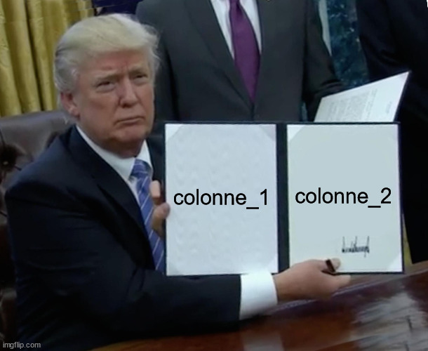
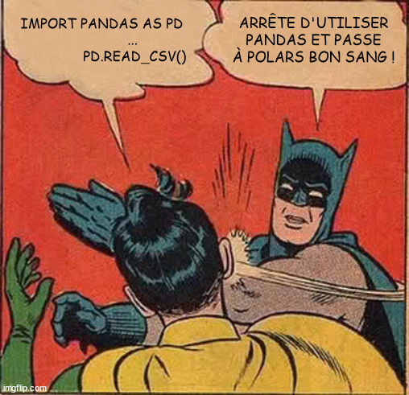
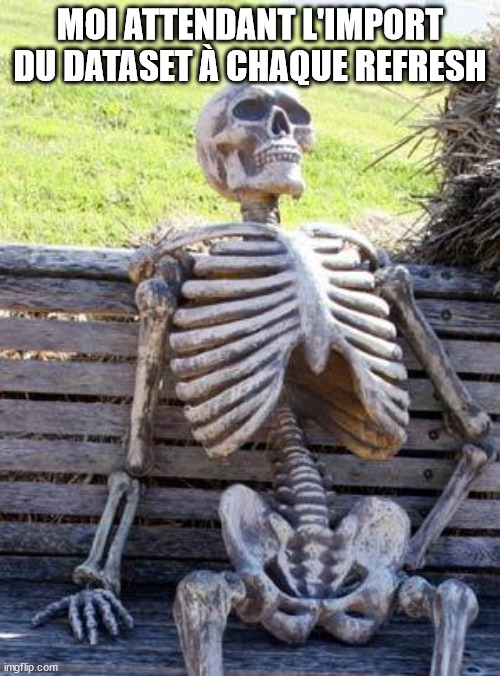
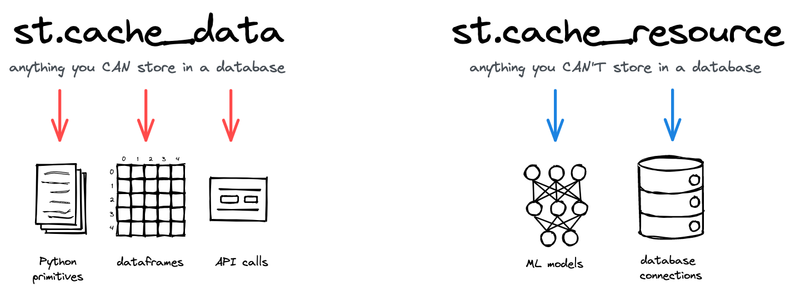
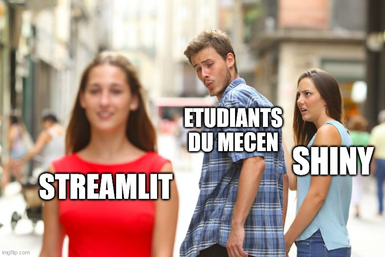
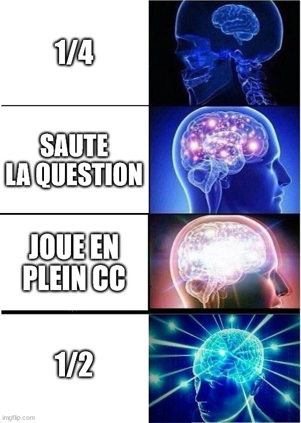

💻 Streamlit
Le framework qui cartonne
Présentation
Un framework python récent, lancé en 2019.
Et avant Streamlit, qu’est ce qu’il y avait ?
Flask \(\Rightarrow\) Prise en main très complexe, plus adaptée pour les Software Engineers.
Plotly Dash \(\Rightarrow\) Prise en main plus simple que Flask, concept assez similaire à Shiny avec séparation des composants
UIetserver.
Corentin
Flask \(\Rightarrow\) Super Framework pour faire une appli web scalable mais si vous venez d’un background Data c’est vraiment très très galère, il faut savoir ce qu’on fait.
Plotly Dash \(\Rightarrow\) Configuration des inputs, outputs, callbacks.
Pourquoi Streamlit ?
Objectif : Simplifier au maximum le développement d’applications Data.
User Interface ?
Inputs ?
Outputs ?
Interactions ?
Callbacks ?
Et pourquoi pas juste un script ?
Corentin
A dire après l’objectif :
A l’époque un Data Scientist il faisait son petit Boosting en utilisant sklearn, il faisait une cross-validation, il regardait ses métriques et puis si c’était bien il passait à un autre projet.
Et puis…c’est tout.
En bref il restait souvent dans son notebook, le modèle était assez peu exploitable, et surtout, il était interprétable uniquement par les équipes Data qui l’avaient fait. Et les Data Scientists ils avaient pas particulièrement envie de s’embêter à apprendre Dash ou même Flask. Niveau communication des résultats on a vu mieux.
Et c’est là que Streamlit arrive avec une idée toute simple : au lieu de séparer tous les composants logiciels de l’interface utilisateur, on fait juste un script.
Installation
- Lancement d’un terminal :
- Et ensuite on installe via
pipavec la commande
python -m pip install streamlitAybuké
Est-ce que tt le monde a réussi à installer du coup ?
Prise en main
\(\Rightarrow\) Lançons la démo pour voir de quoi Streamlit est capable.
python -m streamlit helloAybuké
Vous pouvez regarder en détail la démo mais on va pas vraiment se concentrer dessus étant donné qu’on va construire une petite app nous-même, on trouve que c’est quand même plus intéressant.
Un premier jet !
app.py
import streamlit as st
st.set_page_config(page_icon="🐍", page_title="PyApp")
st.title("😎 Ma première app super stylée")
st.markdown("Du *markdown* dans l'app ? **Rien de plus simple !**")
st.markdown("- Lien vers [`streamlit`](https://streamlit.io/)")
st.markdown(
"""
> Des couleurs ? :orange[orange], :red[rouge], :green[vert]
"""
)
st.code(
"""
[[i for i in range(5)] for j in range(2)]
# Du code non-exécutable
""",
language="python"
)
st.divider()🚀 et pour lancer l’appli :
python -m streamlit run app.pyAybuké
Ce qu’on a vu jusqu’ici
st.set_page_config()pour configurer le favicon et le titre de l’onglet dans le navigateurst.title()pour donner un titre à notre appst.markdown()pour ajouter du texte avec différents types de formattage : italique, gras, ajout de liens, etc.st.code()pour inclure du code non-exécutable provenant de différents langages :python,SQL,CSS, etc.st.divider()pour tracer une ligne horizontale
Aybuké
Intégration de LaTeX
Identité D’Euler
\[ e^{i \pi} + 1 = 0 \]
Ajoutons ces quelques lignes de code.
st.header("Ajoutons du LaTeX")
st.subheader("Identité d'*Euler*", divider="blue")
st.latex("e^{i \pi} + 1 = 0")
st.caption(
"""
L'identité d'*Euler* est souvent citée comme
un exemple de beauté mathématique.
"""
)Corentin
Ca c’est quelque chose qui va certainement plaire à madame Scholler.
Présentation de widgets
Testons quelques widgets !
st.selectbox()st.button()
fruit = st.selectbox(
"Fruit",
("🍓 Fraise", "🍊 Orange", "🥭 Mangue", "🍌 Banane", "🍏 Pomme"),
index = None,
placeholder = "Sélectionner un fruit"
)
bouton = st.button("Voir les détails du fruit sélectionné")
if bouton:
st.write(f"T'as la dalle ! Tu veux manger une **{fruit}**")Guillaume
Notez qu’une fois que vous changez l’input de la selectbox dans l’application, l’ensemble du script est ré-éxécuté, et donc, le bouton est re-caché par défaut.
Ce rerun total qui est la signature de streamlit peut faciliter le développement de certaines applis mais peut parfois être assez contraignant.
Options de layout
st.columns()\(\Rightarrow\) Colonnesst.container()\(\Rightarrow\) Conteneurst.expander()\(\Rightarrow\) Expandeurst.tabs()\(\Rightarrow\) Tabsst.sidebar()\(\Rightarrow\) Sidebarst.popover()\(\Rightarrow\) Popover
Hassan
De nombreuses options de layout sont disponibles pour modifier l’application.
On peut ajouter des colonnes, créer des boites flexbox avec les containers, des tabs, une sidebar, etc.
Colonnes
colonne_1, colonne_2 = st.columns(2)
Explication visuelle par Donald J. Trump

Hassan
La je vais d’abord vous présenter la création de colonnes avec le futur président des Etats-Unis.
Il y a plusieurs moyens de gérer la taille des colonnes, par défaut si on ne met qu’un chiffre qui indique le nombre de colonnes ça va diviser la page en 2,3,4, etc.
Mais on peut aussi passer une liste avec des floats du type [0.1, 0.4, 0.4, 0.1]
Tabs
On va ajouter quelques onglets (Tabs) à notre application pour diversifier l’interface.
tab_1, tab_2, tab_3 = st.tabs(
["🔎 Infos sur l'année", "📄 DataFrame", "📊 Graphiques"]
)
if prenom:
with tab_1:
if reussite:
st.balloons()
st.write(f"Félicitations pour ton année *{prenom}* ! 🎈")
else:
st.snow()
st.write(
f"**Aie Aie Aie**... 🥶 va falloir taffer *{prenom}*"
)Guillaume
On va en plus vous faire crouler sous les ballons et la neige maintenant.
Des messages de statut
- ℹ️
st.info() - ❌
st.error()
- ⚠️
st.warning() - ✅
st.success()
with st.sidebar:
with st.expander("On regarde quelques messages ?"):
st.info(
f"Ton épanouissement en master : {epanouissement}/10",
icon="👨🏫"
)
st.error(
f"Ta note en Concurrence et Innovation : {note_pf}",
icon="👀"
)
st.warning("Ceci est un avertissement générique", icon="⚠")
st.success("Message de réussite.", icon="✅")Hassan
Sur Streamlit, il existe aussi des conteneurs colorés spéciaux qui sont adaptés pour l’affichage d’erreurs, d’infos, d’avertissements. On va les rergarder un petit peu ensemble.
Et avec des vraies données ? (I)
On a vu tout un tas d’éléments d’
UI, mais on a pas vraiment interragi avec des données dignes de ce nom.

\(\Rightarrow\) Morale de l’histoire : Installe polars
Corentin
Quand on pense manipulation de données en python, on pense pandas, mais il est temps de passer à la vitesse supérieure et d’avoir un truc vraiment rapide.
Et avec des vraies données ? (II)
Exemple avec des données de cas de COVID-19 aux Etats-Unis entre 2020 et 2022 : + 2.5 millions de lignes !
import polars as pl
df_covid = pl.read_csv(
"https://raw.githubusercontent.com/nytimes/covid-19-data/master/us-counties.csv"
)- L’import met trois ans
- En plus, chaque action dans l’appli relance l’import…
Corentin
On est pas rendus…

Corentin
Solution (I)

Deux décorateurs très utiles :
@st.cache_data et @st.cache_resource
Corentin
Pour le premier décorateur, imaginez que vous ayez un dataframe de 2,5 millions lignes, ça va devenir assez encombrant que chaque interaction relance entièrement l’appli, et donc l’import des données peut se faire en une fois, et ensuite les données vont rester dans le cache du navigateur.
Solution (II)
@st.cache_data
def import_covid_usa(link: str) -> pl.DataFrame:
"""Fonction d'import des données optimisée."""
return pl.read_csv(link)💡 Et maintenant, observons la différence !
df_covid = import_covid_usa(
"https://raw.githubusercontent.com/nytimes/covid-19-data/master/us-counties.csv"
)On attend une seule fois pour l’import des données, ce qui est beaucoup plus satisfaisant pour l’utilisateur.
- Solution la plus optimale ici : base de données
Corentin
Affichage d’un tableau
On a maintenant envie d’afficher nos données sous forme de tableau.
with tab_2:
st.dataframe(
df_covid,
hide_index=True,
use_container_width=True,
column_config={
"date": st.column_config.DateColumn("📅 Date", format="DD/MM/YYYY")
},
)\(\Rightarrow\) Grande flexibilité dans l’affichage.
Hassan
L’option hide_index permet de cacher la colonne d’indice qui est associée au dataframe.
La seconde option permet de forcer le tableau à prendre la taille complète du conteneur. La dernière option est probablement la plus intéressante parce qu’elle permet de passer un schéma de configuration de colonnes pour les personnaliser.
📊 Et pour les graphiques ?
On va chercher à visualiser le nombre de morts par état à une certaine date (un peu macabre 😷).
with tab_3:
st.subheader("Nombre de personnes mortes de COVID-19 *(Noël 2020)*")
deaths_by_state_christmas = (
df_covid.filter(pl.col("date") == "2020-12-25")
.group_by("state")
.agg(pl.col("deaths").sum())
)
st.bar_chart(deaths_by_state_christmas, x="state", y="deaths")De nombreuses options de visualisation à la volée :
st.line_chart()st.scatter_chart()st.map()- etc.
Aybuké
Dans notre code ici, on retrouve un peu de polars mais rien de compliqué vous voyez que ça ressemble à la syntaxe de SQL.
Pour plus de contrôle sur les visualisations on peut utiliser plotly, altair ou matplotlib avec d’autres commandes.
DeltaGenerator
Au coeur de tous ces composants permettant de créer l’interface utilisateur, il y a une classe : le DeltaGenerator.
- Système basé sur protobuf, crée par GOOGLE
Corentin
Et comme évidemment les devs de chez Streamlit ils ont pas réinventé la roue ils ont utilisé un système de sérialisation et désérialisation de données qui a été crée à la base par Google.
Les messages Delta protobuf dans Streamlit en gros c’est donc des messages qui décrivent les modifications à apporter à l’interface utilisateur de l’application. Ces messages contiennent des instructions sur la façon de mettre à jour ou de modifier les éléments.
Par exemple les messages d’alerte, la sidebar, ou même les tabs, ce sont tous des composants DeltaGenerator qui sont des conteneurs, on peut le voir si on s’amuse à utiliser F12 pour inspecter l’appli.
Pour aller + loin
Secrets management
def check_password():
"""Returns `True` if the user had the correct password."""
def password_entered():
"""Checks whether a password entered by the user is correct."""
if hmac.compare_digest(st.session_state["password"], st.secrets["password"]):
st.session_state["password_correct"] = True
del st.session_state["password"] # Don't store the password.
else:
st.session_state["password_correct"] = False
# Return True if the password is validated.
if st.session_state.get("password_correct", False):
return True
# Show input for password.
st.text_input(
"Mot de passe",
type="password",
on_change=password_entered,
key="password",
placeholder="Veuillez insérer le mot de passe pour accéder à l'application.",
)
if "password_correct" in st.session_state:
st.error("😕 Mot de passe incorrect")
return False
if not check_password():
st.stop()Hassan
Exemples d’appli complètes
- 🍷 Projet de Machine Learning du
Coc's& duGuig's: Wine Scraping - 🚗 Projet de Machine Learning de
Buk& duH: EstimyCar
API Reference : https://docs.streamlit.io/library/api-reference
Guillaume
FIN

Hassan
Streamlit devient de plus en plus omniprésent dans le domaine de la data et vous aurez peut-être à l’utiliser, et en tout cas nous on vous le conseille fortement, et surtout on espère que ça vous a plu et que ça vous sera utile.
(Un dernier meme pour la route)
